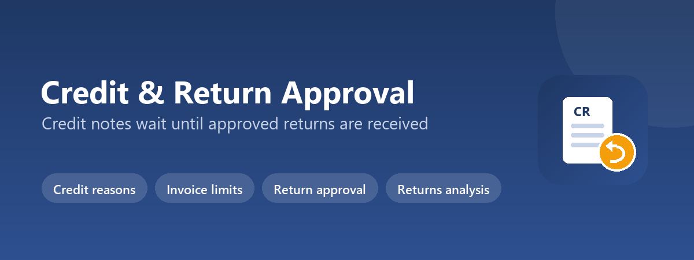

Give every customer credit note a reason, keep it within the invoice, and post it only once the approved return is received.
A reason is chosen whenever a customer invoice is credited. When the reason says the goods must come back, accounting requests the return from the draft credit note and a Return Approver decides. Approving creates the return transfers, and the credit note can be posted once the goods are received.
📝 Credit note reasonsPick a reason when crediting a customer invoice; each reason says whether the goods must come back. |
📏 Invoice limitsA credit note cannot credit a product that was not invoiced, more quantity than is left, a higher unit price or more than the invoice total. |
📦 Return requestsAccounting requests the return from the draft credit note, and the Return Approvers get an activity. |
✅ Approve or rejectApproving creates the return transfers from the original deliveries; rejecting creates nothing in the warehouse. |
⏳ Posting waitsA credit note that needs a return can only be posted when the request is approved and the goods are received, back orders included. |
📊 Returned Goods analysisSee the quantity received and the value credited by reason, product, category, customer and salesperson. |
Odoo 18.0 • Community & Enterprise • depends on Invoicing, Sales and Inventory • Licence LGPL-3
Odoo implementation and development. thecodelegion.com